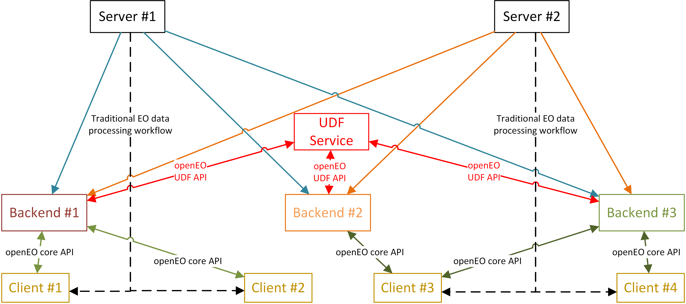
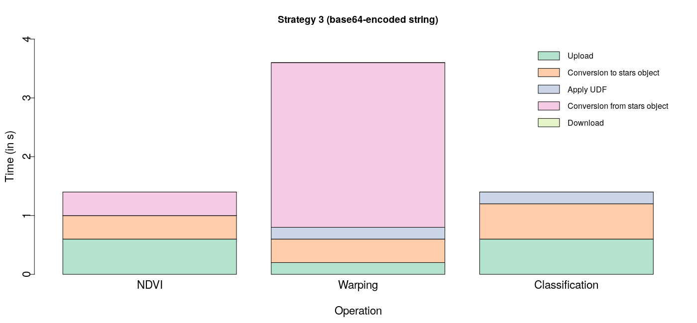

Running user-defined functions in R on EO data in cloud back-ends
<Pramit Ghosh | Uni Münster>
July 4, 2019 | FZ Jülich
Traditional EO data processing
- Requires data to be present locally
- Bottlenecks for processing large data volumes
- Bandwidth
- Computing power
- Cloud-based processing seems to be the most promising solution
- Moving code to data is easier than the other way around
- openEO aims to develop a mediating API comprehendible to compliant back-ends and clients
User-defined Functions (UDF)
A UDF service allows users to run their own code instead of only those provided by the back-ends 
But…
- How usable would such a service be for practical purposes from the PoV of users?
- Intended users: geographers, ecologists, modellers etc. who wish to run their code on EO data
- Is it possible to improve upon the capabilities offered by existing state-of-the-art infrastructures such as Google Earth Engine (GEE)?
Overview of methodology
- Prototypical R package
openEO.R.UDF(Ghosh and Lahn, 2019) exploring 3 strategies for a UDF service- File-based service
- RESTful service with EO data as JSON arrays
- RESTful service with EO data as base64-encoded strings
- Evaluated the strategies through quantitative experiments and qualitative study
- The best strategy (using base64-encoded string) was compared with GEE with respect to usability and functionality
UDF service implementation
Using stars (Pebesma, 2018) 
Results
- Implementation using base64-encoded strings offers faster results than other strategies for a variety of commonly used operations  Experiments performed on 300px*300px subsets of Sentinel-2 time-series with 3 time-steps
Advantages over GEE: Usability
- R coding style need not be adapted for execution in the cloud
- Users do not need to change the code written for their local machine drastically
- No distinction between client- and server-side objects (Gorelick et al., 2017)
- Open-source HTTP-based interface with language-agnostic open-source technologies
- Clients not bound by language to interact with the service (e.g. JS, Python in GEE)
- Gentle learning curve for users
Advantages over GEE: Functionality
- Download, install and use external libraries (R packages) at run-time from CRAN, Github etc.
- Users not limited to pre-defined functionality
- Support for external data in a variety of formats
- Possible for users to send supplementary data files to the UDF service
- External processing support
- Users can query external processing services (e.g. WPS) over the internet as a part of their UDFs
Limitations and Future directions
- Functionalities are at the expense of crucial limitations
- Scalability
- Security
- Fault tolerance
- Possible to overcome these without compromising the advantages
- Future directions
- Parallelization of execution by suitably chunking EO data
- UDF archive for modular code compatible with multiple back-ends
Conclusion
- A language-agnostic web-based UDF service could be implemented using open-source and generic technologies in a way that is practically usable by users
- particularly in the context of the openEO project
- There is room to improve upon existing state-of-the-art infrastructures, such as GEE, and offer additional functionalities
- requires more research to overcome limitations
Acknowledgements
References
Pramit Ghosh and Florian Lahn. openEO.R.UDF: User-defined functions (UDF) in R on Earth observation data in cloud back-ends, 2019. URL https://github.com/Open-EO/openeo-r-udf. R package version 0.1. Homepage https://open-eo.github.io/openeo-r-udf/
Noel Gorelick, Matt Hancher, Mike Dixon, Simon Ilyushchenko, David Thau, and Rebecca Moore. Google Earth Engine: Planetary-scale geospatial analysis for everyone. Remote Sensing of Environment, 202:18–27, 2017. doi: 10.1016/j.rse.2017.06.031.
Edzer Pebesma. stars: Scalable, Spatiotemporal Tidy Arrays, 2018b. URL https://CRAN.R-project.org/package=stars. R package version 0.2-0.
Thank you!
- Questions?
Contact